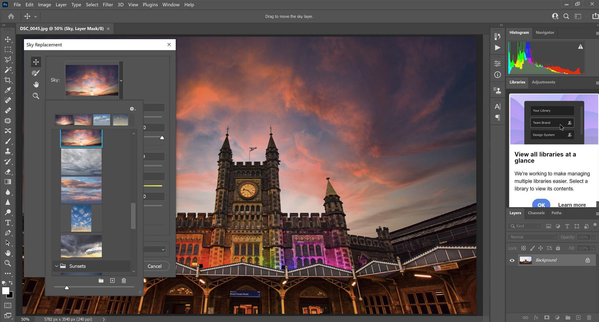

| |
photoshop |
é um software da multinacional americana Adobe Inc. usado para edição de imagens, criação de arte digital, design gráfico e animações
 |
O Photoshop é um software da multinacional americana Adobe Inc. usado para edição de imagens, criação de arte digital, design gráfico e animações. A multiplicidade de usos do software faz com que o Photoshop seja uma ferramenta de trabalho para diversos tipos de profissionais. |
|  | Abra a foto que você quer editar. Toque em Editar. Ferramentas. Selecione as ferramentas que você quer usar com a foto e faça as alterações. Quando terminar, toque em Concluído. Para desfazer um efeito, desmarque a opção ou toque em Cancelar. |
| Aprender Photoshop não costuma apresentar muita dificuldade, sobretudo quando a pessoa é curiosa, ligada à tecnologia e tem vontade de desenvolver novas habilidades. Ainda assim, determinadas dicas têm capacidade de facilitar bastante esse processo de aprendizado. |
 |